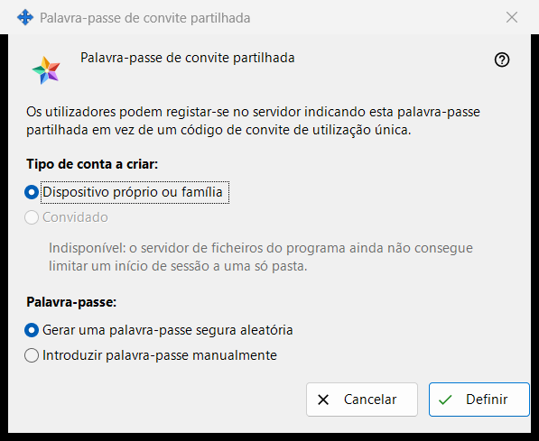
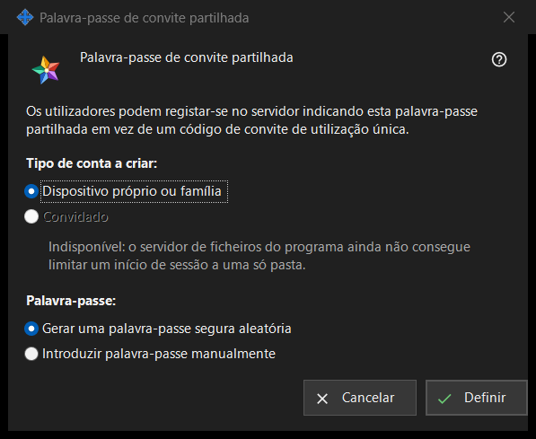

Palavra-passe de convite partilhada
Finalidade
Esta janela permite que os utilizadores se registem no servidor com uma palavra-passe partilhada em vez de um código de convite de utilização única. Abre-se ao assinalar «Palavra-passe de convite partilhada» no grupo «Convites» das definições do servidor de troca, ou com «Definir palavra-passe partilhada..» ao lado.


Nesta ordem
- Escolha o tipo de conta.
- Escolha se o programa gera a palavra-passe ou se a escreve você.
- Prima «Definir».
- Se a palavra-passe foi gerada, copie-a da janela que a mostra uma só vez.
- Para deixar de a aceitar, desmarque «Palavra-passe de convite partilhada» e confirme.
Os elementos
Tipo de conta
«Tipo de conta a criar:» oferece «Dispositivo próprio ou família» e «Convidado». «Convidado» está desativado e a linha por baixo indica o motivo: o servidor de ficheiros do programa não consegue limitar um utilizador a uma só pasta. Quando já existe uma palavra-passe partilhada ativa, o seu tipo atual vem pré-selecionado. Se esse tipo existente for Convidado, «Definir» fica desativado; a palavra-passe partilhada pode, ainda assim, ser desativada.
Palavra-passe
«Palavra-passe:» oferece «Gerar uma palavra-passe segura aleatória» (selecionado por predefinição) e «Introduzir palavra-passe manualmente». Depois de «Definir», uma palavra-passe escrita é pedida numa janela de palavra-passe que verifica a política: pelo menos 10 carateres com uma letra latina maiúscula, uma letra latina minúscula e um dígito. Se cancelar essa janela, volta para aqui.
Definir
«Definir» envia ao servidor a palavra-passe e o tipo de conta e ativa a palavra-passe partilhada; a página mostra «Palavra-passe de convite partilhada guardada e ativada.» e a linha de estado por baixo da caixa de seleção diz «Palavra-passe partilhada ativada (tipo de conta: ..).» Uma palavra-passe gerada é mostrada uma só vez numa janela própria: copie-a aí, não é possível lê-la de novo. Quem conhecer a palavra-passe pode registar uma conta do tipo escolhido, por isso transmita-a apenas às pessoas que quer admitir.
Desativar
Ao desmarcar a caixa de seleção, é feita a pergunta «Desativar a palavra-passe de convite partilhada? Os novos registos com ela deixarão de ser possíveis.» A resposta predefinida é Não. Depois de Sim, a página mostra «Palavra-passe de convite partilhada desativada.» e a linha de estado diz «Palavra-passe partilhada desativada.»
Cancelar
«Cancelar» ou Esc fecha a janela e não altera nada. Se a abriu ao assinalar a caixa de seleção, a caixa volta ao estado anterior.
Definições do gestor · Definições de partilha SFTP · Definições do servidor de troca